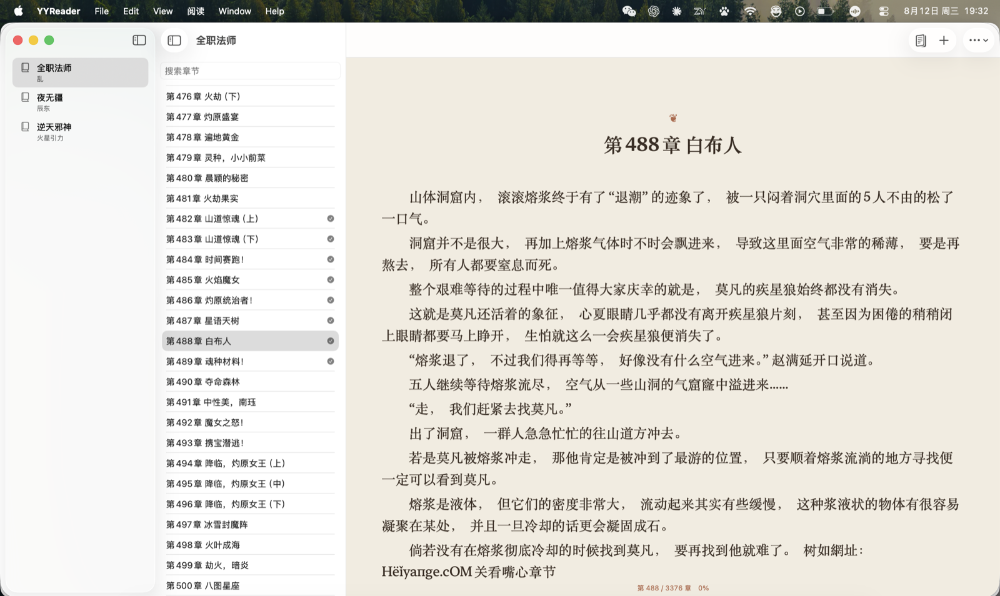
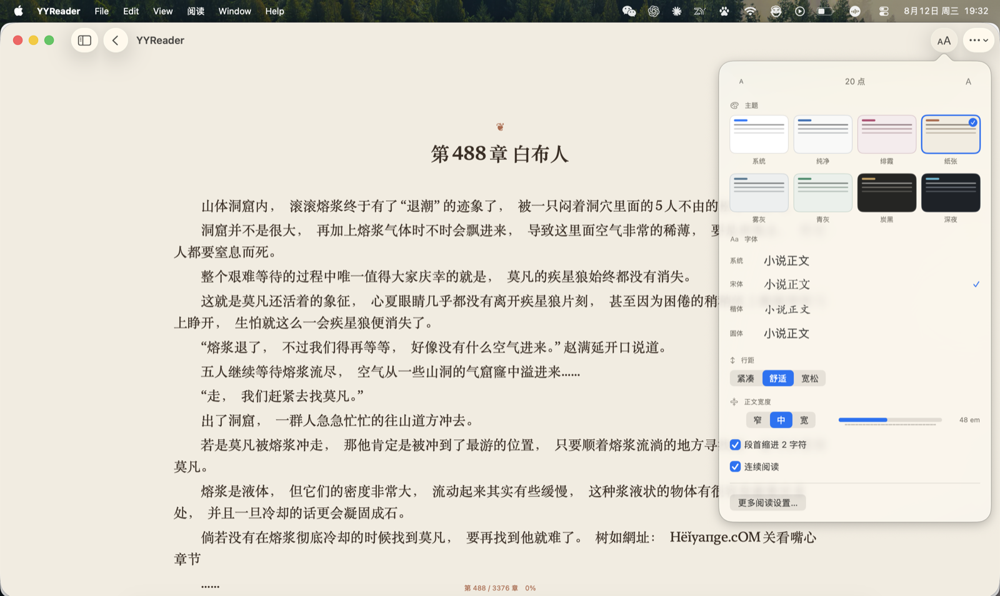
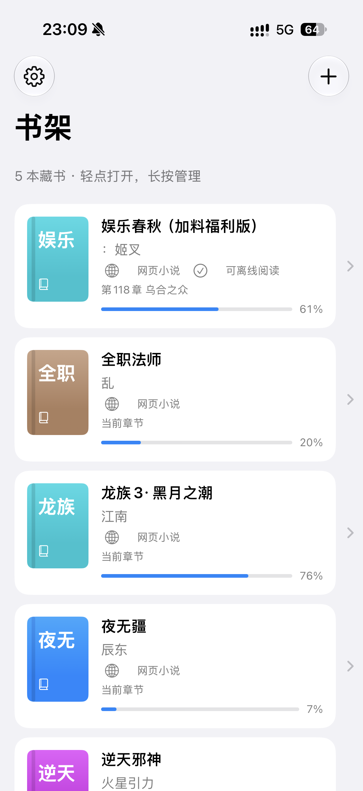
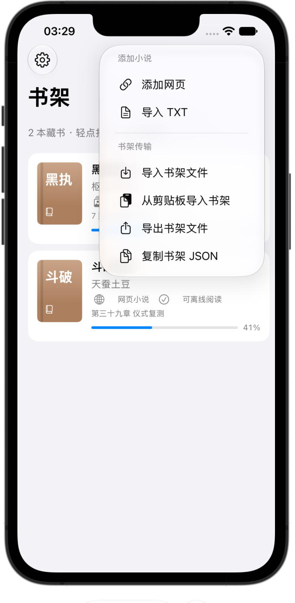
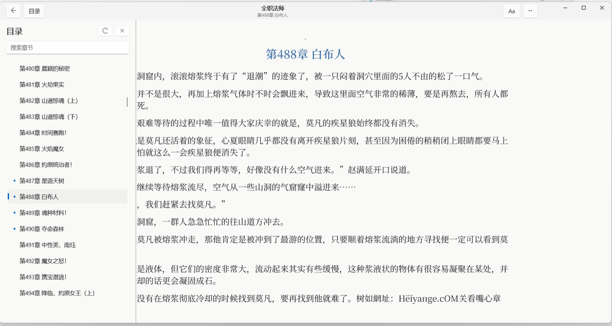
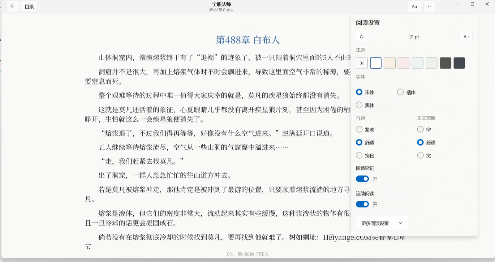

按内容导入
添加网址时可选自动识别 / 文字小说 / 漫画。选择随书籍保存，之后的加载、刷新目录与离线下载都沿用；旧书默认自动识别。
macOS 15+ · iOS / iPadOS 18+ · Windows 10/11
把网页或本地 TXT 变成安静的原生阅读体验。书架、离线缓存与阅读进度都留在你自己的设备上， 不经过任何中心服务器。

亮点
不追功能数量，只把「读得下去」这件事做扎实：干净的正文、稳定的位置、随时可离线。
添加网址时可选自动识别 / 文字小说 / 漫画。选择随书籍保存，之后的加载、刷新目录与离线下载都沿用；旧书默认自动识别。
正文由原生控件渲染，不是网页套壳。主题、字体、字号、行距、段距、正文宽度与段首缩进都能调，支持 UTF-8 / GBK / GB18030 的 TXT。
滚到章末自动接上下一章，默认预取小说 3 章、漫画 10 张图片；也可主动缓存当前章、后续章节或整本，断网照读。
一键把小说排成学术论文的样子：模拟标题、摘要、引用与图表，宽屏双栏、窄屏单栏。只改变呈现方式，不改写正文，切回来还在原位。
设置里能看到总占用与每本书占用，可按本或全部清理。漫画每本 512 MB 预算，超出后优先清理已读章节，当前章与未读内容始终保留。
把任意共享文件夹（iCloud Drive、Dropbox、OneDrive、Syncthing、NAS）当作同步媒介，交换书架与阅读进度；正文与图片始终留在本机。
界面一览
Mac 与 iOS 共用解析、缓存与进度逻辑；Windows 端提供小说阅读。界面各自贴合系统习惯。





漫画
同一套书架、缓存与进度机制，只是把「段落」换成「图片序列」。
为常见站点写了针对性的解析，能拿到完整的图片列表，而不是只抓到首屏那几张：
其他站点按正文区域、图片序列、尺寸与上下话导航综合打分识别；广告图集或证据不足时明确报错，不会把推荐位当成正文。
自动模式在小说正文不可信时尝试高置信度漫画解析；也可以在导入时手动指定为漫画。
左右翻页支持自动 / 单页 / 双页布局：横向大图独占，竖图成对，首图可单页，组合不跨章。iPhone 点击两侧切页、拖动跟手；双击放大后可捏合与拖动。
部分站点用 blob: 呈现图片，YYReader 只读取页面上已经正常显示的那一张，绝不解密或绕过访问控制；解码与缓存都在后台完成。
每本漫画 512 MB 预算，超出后按「最久没读」的顺序清理已读章节；当前章与还没读的内容不会被删掉。
站点适配细节与已知限制见 漫画阅读与适配说明。
排版试读
下面的排版参数和应用里的阅读设置是同一套：主题、字体、字号、正文宽度。示例文字为自造内容。
一觉醒来，莫凡发现整个世界都变了。
熟悉的校园，熟悉的操场，甚至连教导主任那副严厉的面孔都没有变，但黑板上讲授的不再是数理化，而是——魔法。
「魔法的觉醒，是每一个初阶法师踏入真正修行的起点。火系的狂暴、雷系的毁灭、冰系的凝结，每一种属性都代表着对抗荒野妖魔的可能。」
他转头望向窗外，天空中隐约掠过带着羽翼的巡逻队，城市高楼的外墙上，刻印着若隐若现的防御法阵。
在这个崇尚魔法的新世界，科学变成了神话，而曾经被视为传说的魔法，成了人类抵御灾难的唯一依仗……
示例文字为项目自造的演示内容，与真实作品无关。
跨设备接续
不架设服务器、不绑定账号。各端只写自己的快照文件，互相读取、无锁合并。
YYReaderSync/
mac.jsonmacOS 写入ios.jsoniPhone / iPad 写入windows.jsonWindows 写入各端只写自己的快照并读取他端；书籍按规范来源 URL 合并，阅读位置只向更后推进。
每台设备只维护自己的文件，谁也覆盖不了谁，多端同时读也不会互相打架。
合并时只接受更后的章节或同章更后的位置，避免设备时钟差异把进度顶回去。
共享目录暂时不可用或快照损坏时，保留本机书架与缓存，恢复后继续合并。
快照只含书名、来源与进度索引，不含正文、漫画图片、Cookie 或登录信息。
也可以用书架文件（.yyreader / JSON）或剪贴板整包传输书架；本地 TXT 需在各设备分别导入。
目前 iOS 与 Windows 之间的进度交换需要 Mac 中转。
快捷键
macOS 常用操作；Windows 对应位置使用 Ctrl 组合。
唤起网址输入框，从剪贴板预填。
跳转章节并把位置落到段落开头。
随时收起侧栏，正文自动居中。
主题、字体、字号与版式设置。
切换论文外观，快捷键可自定义。
小说平滑滚动；漫画左右翻页时切换整组图片。
下载
当前版本：macOS / iPhone / iPad 1.4.0，Windows 1.3.0。全部构建都带 SHA-256 校验值。
b1093b9091c9250fe1dcc18ffb35762f2e8dd1b73eaee47f9de7a44a6e09c726
首次打开若提示「未经验证的开发者」，在访达中右键点应用并选择「打开」即可。
3394364aa6dae5e9507e9ff5a2e5eff89ed1a7e4af0a4a3a82d4fefa944249b9
安装与续签步骤见 iOS 开发与安装说明。
C596F1F6A2738B6A30F1DE1AF053B20AA0AADA85A8CFEDA448C07125EB1D2872
若 SmartScreen 提示「未知发布者」，点「更多信息」→「仍要运行」。
每个安装包旁都提供 .sha256 文件，可用
shasum -a 256 <文件> 自行核对。完整更新记录见
RELEASE_NOTES.md。
常见问题
专门的适配覆盖 qidiy.com 等站点；其余大多数站点由通用解析引擎处理：按 JSON-LD、OpenGraph、正文语义容器与中文标点密度判断正文，只要能正常显示章节正文和上一章 / 下一章导航，通常都能解析。
应用优先用轻量的原生请求抓静态页面；若站点要求人机验证或必须执行脚本，会打开一个可交互的浏览器窗口让你完成一次验证，之后把渲染结果交回原生阅读器。正文不会在浏览器里阅读，也不会自动尝试绕过验证码、登录或付费墙。
瓜子漫画、再漫画、好多漫、漫画站、多看漫画有专用适配；其他站点通过正文区域、图片序列与导航综合识别，证据不足时会明确提示失败，而不是抓一堆广告图。细节见漫画阅读与适配说明。
下载 IPA 后用 SideStore、Sideloadly 等工具用自己的 Apple ID 签名安装，7 天有效期由工具负责续签。作者已完成过真机签名、阅读与同步的完整流程；具体步骤见iOS 开发与安装说明。
不会。同步只交换书架、书籍信息与进度索引，正文与漫画图片始终留在本机。同步也不需要常连网络：离线时进度先存在本地，共享文件夹恢复可用后自动合并。
漫画支持目前在 Mac 与 iOS 端提供（含双页布局、图片缓存预算与专用站点适配）。Windows 1.3.0 专注于小说阅读、TXT 导入、离线缓存、论文伪装与书架同步。
不会。它只改变呈现方式：套上模拟的论文标题、摘要、引用与图表，宽屏双栏、窄屏单栏。切回普通阅读后仍在原来的位置，正文内容一字不改。